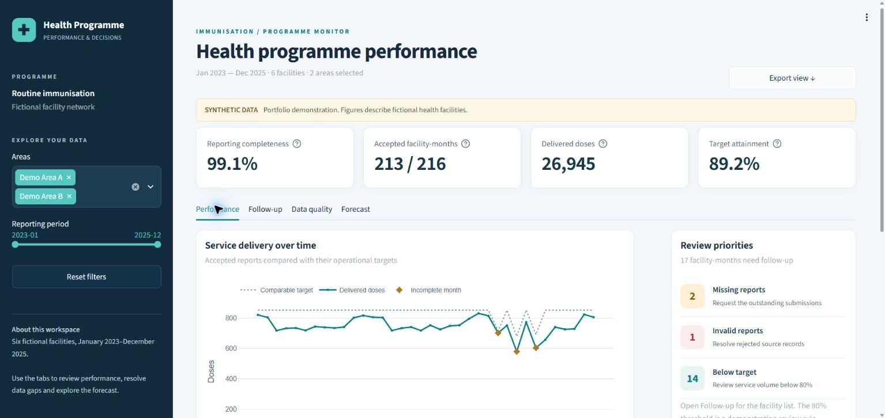

Python
Primary language
MACHINE LEARNING & ARTIFICIAL INTELLIGENCE
Turning complex data into
intelligent possibilities.
I’m an ML/AI engineer building data pipelines, forecasting models, and AI applications that turn data into useful decisions.
View my portfolio profileI’m Isaiah Kolawole, an ML/AI engineer drawn to the space where data, software, and real problems meet.
My approach starts with understanding the problem: get the data right, build a useful baseline, and evaluate honestly. I’m interested in AI that people can understand, trust, and actually use.
My health programme analytics project brings that approach together through data validation, forecasting, and evidence-based reporting.
Take a look at the workReliable inputs. Clear assumptions. Reproducible pipelines.
Useful baselines. Honest evaluation. Meaningful results.
Thoughtful interfaces. Explainable outputs. Practical AI.
Tools demonstrated in my health analytics project, alongside an ML/AI toolkit to explore next.
Primary language
Data querying & modelling
Analysis & computation
Descriptive analysis & trends
Classical machine learning
Deep learning
Forecasting & backtesting
Metrics & validation
Transformers & NLP
Generative applications
Retrieval & vector search
Grounding & human review
Model serving & APIs
Reproducible environments
Version control & CI
Interactive data apps
Showing all 16 skills.

FEATURED PROJECTAn end-to-end analytics project connecting data quality, service-volume forecasting, and AI-assisted reporting. Built with synthetic facility data to make the entire pipeline reproducible and inspectable.
Recorded results from synthetic data. Nine complete holdout months; independent validation still needed.
Comparing seasonal naive, Ridge regression, and Holt-Winters forecasts using time-based evaluation.
A local reporting assistant that drafts programme briefs with evidence references, number checks, and human review.
One connected project, three areas of focus. All programme data is synthetic.
IDEAS. QUESTIONS. COLLABORATIONS.
Working on a problem that could use a little intelligence? Let’s connect and explore what’s possible.
FIND ME ON GITHUB@kolawoleisaiah325Explore the code, follow the progress, or connect through my GitHub profile.